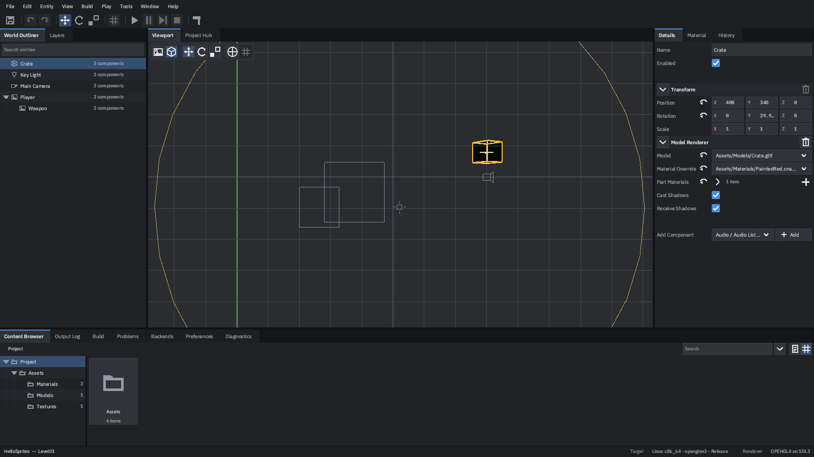
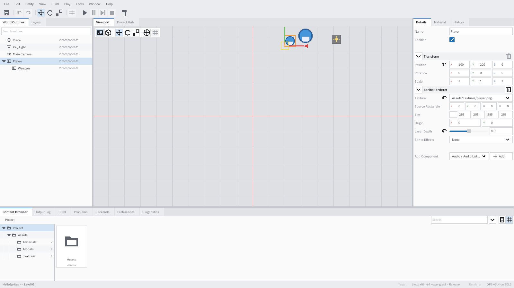
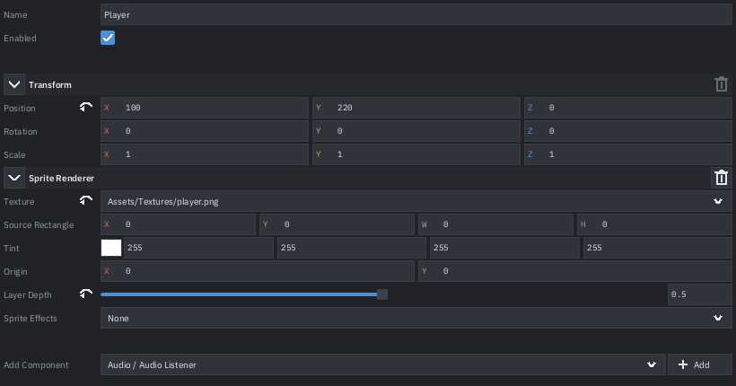

Version 1.0.0 · Maintenance mode
The visual half of a CNA project. The C++ stays yours.
CNA Studio is a lightweight visual development companion for CNA, the C++ reimplementation of the XNA 4.0 framework. It creates projects, manages assets, edits scenes, drives your build, reads your compiler errors and runs your game — then hands you back to CLion or whatever you write C++ in.
What it is, and what it is not
A companion, not an engine editor
Studio does the work that is genuinely easier with a mouse: placing objects, wiring up assets, tuning material and light properties, seeing what you have selected. Eleven steps, each one reliable, documented and covered by a test.
Never a runtime dependency
A project authored here is an ordinary CNA project — a directory with a
CMakeLists.txt, some C++ and some assets. It builds and runs with Studio
uninstalled, and CI proves that for every shipped template on every change.
docs/ADR-001-SCOPE-REDUCTION.md, and the list of things it deliberately does
not do is further down this page.
As of 23 September 2026 all eleven Core deliverables are done and the product is in maintenance mode: bug fixes, compatibility fixes, adaptation to CNA API changes, security and correctness work, and small usability fixes inside the workflow. Planned feature development has stopped.
What it looks like
Captures of the shipped binary, not mock-ups. The three wide ones are real frames from a running Studio window rendered by CNA on the OPENGL4 backend; the two panel close-ups are shell previews, which is how a page taller than its dock gets photographed whole.

HelloSprites example open and Player
selected. World Outliner and its search on the left, the 2D viewport with the project's
sprites, the selection outline and translate gizmo in the middle, the Details grid on the
right, and the status bar naming the build target and the renderer under it.

Crate selected: the imported Crate.gltf
inside its selection box, the cross marking the point a rotation will turn about, the
sprites edge-on and the key light's range drawn as an arc. A multi-selection gets one box
round the whole of it and one pivot between them.



cmake commands — shown before anything runs and copyable in
full.
From a clone to a running game
1 Build Studio
You do not need a GPU, a display, or any of CNA's sibling checkouts to build and run Studio itself. The default build has no external dependencies at all.
git clone https://github.com/libcna/cna-studio
cd cna-studio
cmake -S . -B build -G Ninja
cmake --build build -j4
./build/cna-studio --version
./build/cna-studio --list-templates
If --list-templates prints four templates, you have a working Studio.
2 Create a project
From the Project Hub, or — which is the same code — from the command line:
./build/cna-studio --new-project=/tmp/MyGame \
--template=basic-sample \
--project-name="My Game"/tmp/MyGame/
├── My Game.cnaproject the project file Studio opens
├── CMakeLists.txt yours; Studio drives it and never rewrites it
├── Source/Main.cpp your game's entry point
├── Assets/ what the importers watch
├── Scenes/ what the editor edits
└── Runtime/ the scene loader the template brought with it| Template | Starts you with |
|---|---|
basic-sample | A scene with something in it. The one to pick first |
empty-2d | A 2D project with an empty scene |
empty-3d | A 3D project with an empty scene |
xna-compatible | A hand-written Initialize/LoadContent/Update/Draw game, with no scene model at all |
The four differ in what they start you with, not in what they let you do.
3 Open it
./build/cna-studio --project="/tmp/MyGame/My Game.cnaproject"
# or headless, which is what a test does and what you can do over SSH
./build/cna-studio --project="/tmp/MyGame/My Game.cnaproject" --headless --frames=24 Prove it does not need Studio
The step that matters most, and the one worth doing once on your own machine so that you believe it:
cmake -S /tmp/MyGame -B /tmp/MyGame/build \
-DCNA_ROOT=/path/to/cna -DCNA_GRAPHICS_RENDERER=SOFTWARE
cmake --build /tmp/MyGame/build -j4
cd /tmp/MyGame/build && SDL_VIDEODRIVER=dummy ./My_Game --frames=10
My_Game: loaded 5 entities, drew 2 sprites
No Studio anywhere in that. CI does exactly this for every template on every change
(ctest -R CnaStudioTemplateBuilds), because the one failure mode this rule has
is the one that looks fine until somebody tries it.
The eleven steps
This is the whole product. The list is a sequence rather than a menu: a project exists before it has assets, and a build fails before you read the failure.
-
01
Create or open a project
The Project Hub gives you New, Open and a recent list that greys out what has moved rather than failing when you click it. A project declares its kind, and the kind decides what Studio offers:
CnaNativegets scenes, entities, components, the Inspector, gizmos, prefabs, play mode and both viewports;XnaCompatiblegets assets, importer settings, previews, renderer configuration and Play, and your game keeps its ownInitialize/LoadContent/Update/Draw.There is no native file dialog. The path field and the recent list open any project.
-
02
Browse, import and manage assets
Put a file in
Assets/. There is no import button to find: the Content Browser watches the directory, and an asset gets a UUID that survives being renamed and moved.A text search covers the name, the kind and the path, and leaves the current folder behind — it looks at the whole project, because searching within one folder is how people conclude an asset is gone when it is one folder over. The type filter narrows what you are browsing, which is the opposite scope on purpose. Both scale: a hundred thousand assets, searched or browsed, cost a screenful.
-
03
Create, open and edit scenes
Scenes and prefabs are documents, and every mutation goes through the undo history — there is no path that edits the document directly, and that is enforced by a test rather than by a rule.
Tilemaps, layers and tags are here. So is format migration: a scene written by an older Studio is upgraded on load, and one written by a newer Studio is refused with a message rather than half-read.
-
04
The viewport, selection and gizmos
A 2D viewport and a 3D viewport, with camera navigation, translate/rotate/scale gizmos and band selection. Navigation follows Studio's own scheme, or Maya's, or Blender's — whichever your hands already know.
What is selected is outlined in both. A multi-selection also gets a box round the whole of it, and a cross marks the point a rotation will turn about, which is the thing you need to know before you press R.
-
05
Edit properties
The Details panel, driven by a descriptor model rather than by a switch on type: object properties, materials, lights and the scene's environment.
The label column is sized from the labels actually on screen, so a property called
xsits next to its value instead of a screen away from it. A property that differs from its default is marked and can be reset — through the history, like everything else. -
06
Save
Atomic writes: the file goes to a temporary and is renamed over the old one, so an interrupted save leaves the previous version intact rather than half of both. Dirty tracking, autosave, and recovery of a partially written file.
-
07
Play
Play, Pause, Step, Stop and Restart, against a real separate
cna-playerprocess. That separation is the reason a crash in your game is a crash in your game: Studio reports it, with the exit reason the operating system gave, and stays up.The player's log is routed into the Output panel with its source marked. Assets reload live, and a frame can be captured to a PNG with F12.
-
08
Configure and run builds
The Build panel edits the project's target profiles — operating system, architecture, CNA platform, CNA renderer, configuration and the optional CNA subsystems — with validation that knows which combinations CNA will actually configure.
Build and Clean Build are two gestures. Clean runs your project's own
cleantarget between the configure and the build; it does not delete the directory. Every command is displayed before it runs, and Copy Commands hands you the untruncated, shell-quoted text. Studio drives your CMake and has no build system of its own.An option that is tri-state in CNA is tri-state here:
CNA_ENABLE_VIDEOisOFF,AUTOorON.AUTOuses FFmpeg where the build machine has it;ONrequires it and fails the configure without it, which is a thing a shipping project may well want to say. -
09
Read the failure
A compiler error is a row naming the file, the line and the message — GCC, Clang, MSVC and CMake's own configure errors. Activating the row opens that place in your editor. The complete unparsed log is always one button away, whatever the parser made of it.
-
10
Recover from a crash
Autosave snapshots go to a per-user state directory. On reopening a project Studio finds the snapshot that belongs to it and offers it; a snapshot is written atomically for the same reason a save is. The player reports its own crashes over the bridge, so a game that died tells you how.
-
11
Carry on in your own IDE
Tools › Open Project in External Editor and Tools › Open Main Source in External Editor, using the editor named under Preferences › Tools. A full path or a name on the
PATH—clion,code,vim,subl,kateand their relatives are known well enough to be told which line to go to.If no editor is configured the gesture is refused with a message naming the setting. Studio does not guess: on Linux, whatever opens a
.cppby default is as likely to be a text viewer as an IDE. This is not an escape hatch — it is the point.
What Studio does not do
Named so that each absence is a decision rather than something you are waiting for. None of these is planned.
- It does not edit C++. No code editor, no completion, no debugger. That is what step 11 is for.
- No native file-browser dialogs for New and Open Project.
- No packaging, cooking or export pipeline. Your project's own CMake already produces a runnable game, and CI proves it builds with Studio absent.
- No installer for Studio itself on any platform.
- No shader graph, and no node-based authoring of any kind.
- No skeletal animation, particle, audio, terrain, physics or navigation authoring. Sprite animation, audio preview and material and lighting editing are here; authoring tools for the rest are not.
- No integrated profiler and no frame debugger. RenderDoc and an ordinary profiler work on
cna-player, which is an ordinary native process. - No C++ gameplay reflection, no generated component boilerplate, no live property injection into a running game, no native code reload.
- No plugin SDK beyond the plugin host that already exists. Plugins can add panels, menus, component types and importers; there is no versioned public ABI.
- No non-Latin text rendering, IME input, accessibility APIs or localisation. A name in a non-Latin script renders as boxes. This one was cut on budget rather than on merit, and it is written down as such.
Something on that list can become active work — but only on a four-part test that starts with a real, maintained CNA application hitting the need repeatedly, and ends with somebody accepting the maintenance cost after it ships. “A professional editor has it” is not an argument, and neither is “it is in the backlog”.
Reference
Requirements
| You need | Why |
|---|---|
| A C++23 compiler — GCC 13+, Clang 16+ or MSVC 19.38+ | Studio and CNA are both C++23 |
| CMake ≥ 3.20 | Studio drives your project's CMake; it never generates a build system of its own |
| A CNA checkout | Only to build a game. Studio itself builds without one |
Keyboard
Every one of these is rebindable under Preferences › Shortcuts, and every command Studio has is on a menu — a command reachable only by a chord is one nobody can discover, and a test refuses it.
| Chord | Does |
|---|---|
| Ctrl+N / Ctrl+Shift+N | New Scene / New Project |
| Ctrl+S / Ctrl+Shift+S | Save / Save All |
| Ctrl+Z / Ctrl+Y | Undo / Redo |
| Ctrl+B / Ctrl+Shift+B | Build / Clean Build |
| F5 / Ctrl+F5 / Shift+F5 | Play / Pause / Step |
| F12 | Capture the running game's frame |
| F2 | Rename whatever the Inspector is showing |
| F1 | About |
Running without a window
Headless mode is not a lesser Studio: it opens projects, reads scenes, creates projects from templates and exports them, with no GPU and no display.
cna-studio --list-templates
cna-studio --new-project=DIR --template=ID --project-name=NAME
cna-studio --project=FILE --headless --frames=N
cna-studio --project=FILE --export=DIR
cna-studio --ui-benchmark # what a frame of UI costs, per panel
cna-studio --host-capabilities # what Studio requires of a host renderer
cna-studio --help # the restStudio can also photograph its own interface with no graphics device at all, which is how the two panel close-ups above were taken and how the visual regression suite runs on every commit:
cna-studio --shell-preview=shell.png --shell-size=1920x1080 \
--project=examples/HelloSprites/HelloSprites.cnaproject --select=PlayerBuilding with the CNA viewport
Opt-in, because it needs two sibling checkouts next to this one:
cd ..
git clone https://github.com/libcna/cna.git
git clone https://github.com/libcna/sharp-runtime.git
cd cna-studio
cmake -S . -B build-cna -DCNA_STUDIO_WITH_CNA=ON -DCNA_DEVICES=ON
cmake --build build-cna -j
# opens a real window with Studio in it
./build-cna/cna-studio --project=examples/HelloSprites/HelloSprites.cnaproject
CNA itself needs SDL3's build dependencies plus FFmpeg headers.
-DCNA_DEVICES=ON is what gives Studio a working clipboard.
| Option | Default | Meaning |
|---|---|---|
CNA_STUDIO_WITH_CNA | OFF | Build the CNA-backed viewport, UI renderer and input platform |
CNA_STUDIO_BUILD_TESTS | ON | Build the test suite |
CNA_STUDIO_WARNINGS_AS_ERRORS | OFF | -Werror / /WX |
CNA_STUDIO_CNA_ROOT | ../cna | Where to find the CNA checkout |
Renderers and platforms
A build target names two independent things: a CNA platform (the windowing and input layer) and a CNA renderer (the graphics backend). Studio classifies the fifty renderer identities CNA publishes rather than keeping a list of its own, and a guard test refuses any code outside that catalogue that names a renderer — because a hard-coded backend name stops being true the next time CNA adds one, silently.
Where the documentation lives
| Document | Answers |
|---|---|
docs/GETTING-STARTED.md | A clone to a running game, in eight steps |
docs/USER-GUIDE.md | The eleven steps, and what Studio deliberately does not do |
docs/ARCHITECTURE.md | How it is built, and why |
docs/RENDERERS-AND-PLATFORMS.md | Which renderers and platforms a target can name, for contributors |
docs/ADR-001-SCOPE-REDUCTION.md | Why the scope is what it is |
plan.md | What is and is not being worked on |
CHANGELOG.md | Releases, and what the version numbers mean |